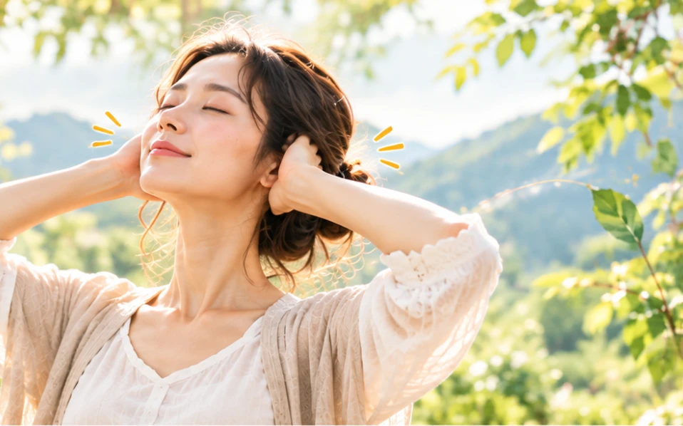

居家防疫期間，運動的方式受到場地、器材、時間的限制，在質和量的部分，都會比平常還要少很多，此時不妨試試「羅德尼的身心放鬆術」，不但可以讓身體保持活動，免於安逸壅塞，還可以同時顧好五官、五臟，讓身心維持在平衡的狀態，可以說是一舉數得。
今天要介紹的動作是—鳴天鼓。
動作執行的方式：首先將雙手手掌完全蓋住耳朵，雙手自然放在腦後位置，之後用雙手食指扣住中指，再將食指輕輕叩擊頭部腦後位置。
當食指扣擊的時候，會聽見「咚咚」的聲音，其響亮的程度，好像是鼓聲一般，再加上古人以「乾」為首為天，以「坤」為腹為地，而這個動作主要的部位是在頭部，所以「鳴天鼓」的名稱就是由此而來。
動作執行的強度：在做「鳴天鼓」的時候，扣擊時的強度千萬不可太大，輕重緩急可以自行調整，總是以自己能夠接受為原則。
所有的身心放鬆術動作，都有一個共通的原則，這個原則就是：「不過量」，也就是說：動作的設計雖然可以讓身體的筋骨活絡起來，並且促進血液循環，但是動作執行過量的話，不論是在強度還是時間，也會對身體造成傷害的。
動作執行的時間：以每次一分鐘為上限，扣擊次數建議每次七下，可以重覆做個3～6次，「七」是取其七日一陽來復之意，況且七天為一週，周而復始的反覆進行，這樣子的效果才會常常久久，扣擊完之後還可以接著用10根手指指腹敲擊整個頭部，從頭髮前沿一路敲到後腦勺，動作結束之後整個人會感覺到相當清爽。
在做「鳴天鼓」的時候，食指敲擊的位置是在腦後的玉枕，古代道家在進行修練的時候，將「尾閭關」、「夾脊關」、「玉枕關」比喻為人身後的三關，為神氣通暢的道路，將「泥丸宮」、「絳宮」、「黃庭宮」比喻為人身前的三宮，為神氣棲泊的場所，是任督二脈循環周流的路線。
玉枕、風池也是人體重要的保健穴位，如有頭痛的時候，也可以按摩風池穴來做為舒緩。
唯一要注意的是，這個動作是在頭部和耳朵的位置，所以如果有頭部或是耳疾的朋友，最好要暫緩一下，直到確定沒有問題之後才可以開始進行。
「鳴天鼓」是利用掩耳和叩擊來對耳朵產生刺激，中醫認為腎開竅於耳，藏精屬水，為六府九竅津液之源，如果腎氣衰的話就容易百病叢生，所以「鳴天鼓」這個動作可以不只可以促進耳部的血液循環，還可以固精強腎，更被視為是中國流傳千年的古老強腎方法。
今天是不是又學會一招了，別光只是看，記得也要試著做！
身安是福、心安即氣，身安心安、福氣自來。